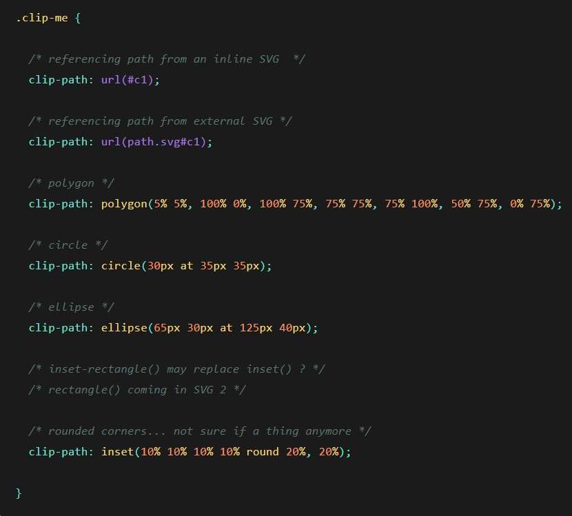
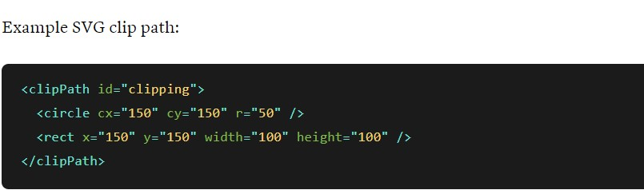

img{
clip-path: circle 50%;
}
The clip-path property lets you clip an element to a basic shape or to an SVG source.
Note: The clip-path property will replace the deprecated clip property.
clip: clip-source |basic-shape |margin-box |border-box |padding-box |content-box |fill-box |stroke-box |view-box |none |initial |inherit;
Defines a URL to an SVG <clippath> element
Clips element to an basic shape: circle, ellipse, polygon or inset
Use margin box as the reference box
Use border box as the reference box
Use padding box as the reference box
Use content box as the reference box
Uses the object bounding box as reference box
Uses the stroke bounding box as reference box
Use SVG viewport as the reference box
.clip-me {
/* Example: clip away the element from the top, right, bottom, and left edges */
clip-path: inset(10px 20px 30px 40px);
/* or "none" */
/* Example: clip element into a Heptagon */
clip-path: polygon(50% 0%, 90% 20%, 100% 60%, 75% 100%, 25% 100%, 0% 60%, 10% 20%);
/* Deprecated version */
/* absolute or fixed positioning required */
position: absolute;
clip: rect(110px, 160px, 170px, 60px);
/* or "auto" */
/* values descript a top/left point and bottom/right point */
}

